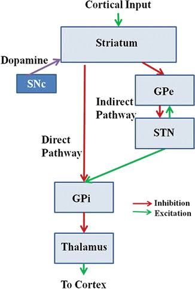
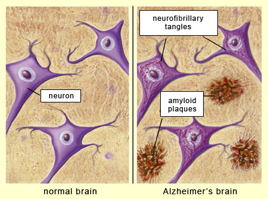
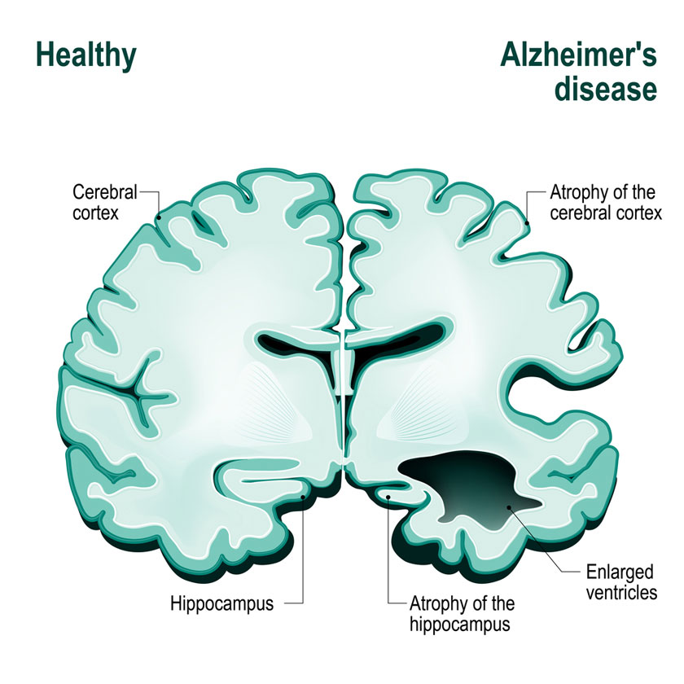
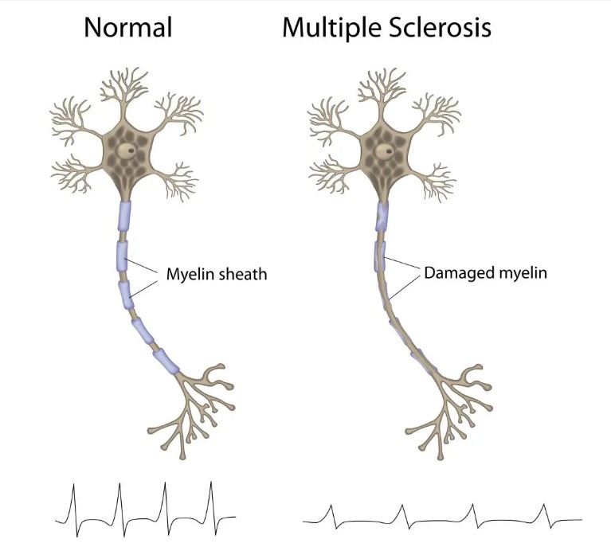

01 · Orientation
5.1 Overview
Neurodegenerative diseases are a group of disorders characterized by the progressive dysfunction, deterioration, and loss of neurons within the nervous system. Unlike many neurological or psychiatric conditions that can alter brain function, development, or signalling without widespread neuronal loss, these diseases are defined by gradual degeneration within particular cell populations, pathways, or brain regions.
They typically develop over time and cause worsening impairments in movement, memory, cognition, behaviour, or other neurological functions. Although each disease affects different cells and circuits, many share mechanisms such as abnormal protein accumulation, impaired protein clearance, mitochondrial dysfunction, oxidative stress, excitotoxicity, disrupted axonal transport, and neuroinflammation.
The causes are complex and often involve interactions among genetic, environmental, and biological factors. Some diseases are strongly associated with inherited mutations, while others arise through a combination of aging, genetic susceptibility, environmental exposures, and cellular changes accumulated across the lifespan. Aging is a major risk factor because damage can accumulate while systems that maintain neuronal health become less effective.
Advances in neuroscience have improved diagnosis and produced treatments that manage symptoms or modify aspects of progression in selected diseases. However, neurodegenerative conditions remain difficult to treat, and many currently have no cure.
02 · Reference
5.2 Neurodegenerative Diseases Glossary
Terms used to describe disease mechanisms, population patterns, progression, and clinical care.
- Diagnosis
- The process of identifying which illness or condition best explains a person's presentation.
- Etiology
- The causes or origins of a disease.
- Pathology
- The physical, cellular, and molecular abnormalities produced by a disease—what has gone wrong.
- Pathophysiology
- The biological mechanisms through which a disease develops and produces dysfunction—how it goes wrong.
- Risk factor
- A characteristic or exposure associated with an increased likelihood of developing a condition.
- Prevalence
- The proportion of a population living with a disease during a defined period.
- Incidence
- The number of new cases that develop within a population over a defined period.
- Comorbidity
- The presence of multiple diseases or health conditions in the same individual.
- Treatment
- An intervention intended to reduce symptoms, improve function, or alter disease progression.
- Prognosis
- The expected course and outcome of a disease, including its likely progression and long-term effects.
- Neurodegeneration
- The progressive dysfunction, deterioration, and loss of neurons, resulting in impaired nervous-system function.
- Atrophy
- The shrinkage or loss of brain tissue, often resulting from degeneration of neurons and their connections.
- Protein aggregation
- The abnormal accumulation of misfolded or damaged proteins within or around cells, potentially disrupting cellular function.
- Oxidative stress
- An imbalance between reactive oxygen species and the systems that neutralize them, potentially causing cellular damage.
- Excitotoxicity
- Neuronal damage or death caused by excessive activation of excitatory receptors, particularly glutamate receptors.
03 · Explore
Diseases and Mechanisms
Each disease is considered through its clinical presentation, causes, vulnerable cells and circuits, diagnosis, and current treatment.
5.3 Parkinson's Disease (PD)
Overview. Parkinson's disease is a progressive neurodegenerative disorder of the central nervous system that prominently affects movement. Motor symptoms usually develop gradually and are often summarized by the mnemonic TRAP: resting tremor, rigidity, akinesia or bradykinesia, and postural instability. Non-motor features can include sleep disturbance, depression, cognitive changes, reduced sense of smell, constipation, and other autonomic dysfunction.

Cause. The exact cause is not fully understood. Most cases are sporadic, without one clearly identifiable inherited cause, although genetic variants can influence susceptibility and some mutations cause familial forms. Increasing age and environmental factors can also affect risk. The disease ultimately involves progressive degeneration across several neuronal populations, particularly dopaminergic neurons in the substantia nigra pars compacta (SNc).
Neurobiology. The SNc normally supplies dopamine to the striatum through the nigrostriatal pathway, helping regulate movement through the basal ganglia. As these neurons degenerate, striatal dopamine falls and disrupts the balance between basal-ganglia pathways.
In a simplified circuit model, reduced dopamine weakens movement-facilitating direct-pathway activity and strengthens movement-suppressing indirect-pathway influence. This increases inhibitory output from the globus pallidus internus (GPi) to the thalamus, reduces thalamic excitation of the motor cortex, and makes movement harder to initiate and scale.
Affected neurons can contain Lewy bodies and Lewy neurites enriched in misfolded alpha-synuclein. Alpha-synuclein aggregation is associated with neuronal dysfunction, but the precise relationship among aggregation, cellular injury, and disease progression remains under investigation.
Diagnosis and treatment. Parkinson's disease is diagnosed primarily from symptoms, medical history, and neurological examination. Imaging or laboratory tests may support the assessment or help rule out other causes, but no single routine test establishes every case.
There is currently no cure. Levodopa, usually combined with carbidopa, is the most effective medicine for many motor symptoms. Other medicines can stimulate dopamine receptors or change dopamine metabolism. Deep brain stimulation can regulate abnormal circuit activity in carefully selected people with medication-responsive but inadequately controlled motor symptoms; it treats symptoms rather than stopping neurodegeneration. Exercise, physiotherapy, occupational therapy, and speech-language therapy can also help maintain function and independence.
5.4 Huntington's Disease (HD)
Overview. Huntington's disease is a progressive neurodegenerative disorder affecting movement, cognition, and behaviour. It commonly produces chorea—rapid, irregular, involuntary movements—alongside cognitive decline and psychiatric or behavioural changes. Although excessive movement may be prominent earlier in the disease, later stages can also involve rigidity and reduced movement.
Cause. Huntington's disease is caused by expansion of a CAG trinucleotide repeat in the HTT gene. The expanded repeat produces a harmful form of huntingtin protein through a toxic gain of function. Alleles with 40 or more repeats are generally fully penetrant, meaning disease is expected to develop if a person lives long enough, while some smaller expansions have reduced penetrance. Larger expansions are often associated with earlier onset.
Huntington's disease is inherited in an autosomal-dominant pattern. Each child of an affected parent has a 50% chance of inheriting the disease-causing allele.
Neurobiology. A major early feature is degeneration of GABAergic medium spiny neurons in the striatum, particularly neurons contributing to the indirect basal-ganglia pathway. Their loss reduces inhibition of the globus pallidus externus and ultimately reduces inhibitory GPi output to the thalamus. Increased thalamic excitation of motor cortex contributes to excessive movement in the simplified early-stage circuit model.
As degeneration spreads beyond motor circuits, networks involved in cognition, emotion, and behaviour are increasingly affected, producing the broader clinical features of the disease.
Diagnosis and treatment. Genetic testing can identify the expanded CAG repeat, usually alongside neurological and clinical assessment. Predictive testing before symptoms requires careful informed consent and genetic counselling because of its medical, psychological, and family implications.
There is currently no cure or treatment proven to stop the underlying degeneration. Medicines can help manage chorea, mood changes, and other symptoms, while physiotherapy, occupational therapy, speech-language therapy, nutritional support, and coordinated care can help preserve function and quality of life.
5.5 Alzheimer's Disease (AD)
Overview. Alzheimer's disease is a progressive neurodegenerative disorder and the most common cause of dementia. Dementia describes cognitive decline severe enough to interfere with everyday functioning and can result from several diseases. Alzheimer's disease often affects learning and memory early, then progressively impairs language, reasoning, attention, behaviour, orientation, and other cognitive functions.

Cause. Alzheimer's disease has a multifactorial etiology involving genetic, biological, and environmental influences. Rare mutations in APP, PSEN1, or PSEN2 can cause autosomal-dominant early-onset familial Alzheimer's disease. Most cases develop later in life through a more complex interaction of aging and susceptibility factors.
The APOE ε4 allele is the most important common genetic risk factor for late-onset Alzheimer's disease, but it is neither necessary nor sufficient to cause the disease. Other associated factors include age, cardiovascular and metabolic health, traumatic brain injury, and aspects of environment and lifestyle. The precise cause of most cases remains incompletely understood.
Neurobiology. Two hallmark pathologies are extracellular amyloid-β plaques and intracellular tau neurofibrillary tangles. Amyloid-β accumulation can disrupt synaptic communication and promote inflammatory and cellular stress. Tau normally helps stabilize neuronal microtubules; abnormally modified tau can detach and aggregate, interfering with transport and other cellular functions.
Pathological changes affect regions involved in learning and memory, including the hippocampus and surrounding medial temporal structures, before involving wider cortical networks. Synaptic dysfunction and neuronal loss eventually produce widespread atrophy and declining communication among brain regions.
Diagnosis and treatment. Diagnosis combines clinical history, cognitive and functional assessment, neurological examination, and evaluation for alternative causes. When appropriate, cerebrospinal-fluid tests, blood-based biomarkers, PET imaging, or structural imaging can provide evidence related to amyloid, tau, neurodegeneration, or other pathology.
Cholinesterase inhibitors and memantine can help manage cognitive or functional symptoms for some people. The anti-amyloid antibodies lecanemab and donanemab are disease-modifying options for appropriately selected people with early Alzheimer's disease and confirmed amyloid pathology. They can modestly slow decline but do not restore lost function or cure the disease, and they require careful assessment and MRI monitoring because of risks including amyloid-related imaging abnormalities involving brain swelling or bleeding.

5.6 Amyotrophic Lateral Sclerosis (ALS)
Overview. Amyotrophic lateral sclerosis, also called Lou Gehrig's disease, is a progressive disorder that primarily affects motor neurons controlling voluntary muscles. As these cells degenerate, muscles receive less neural input, producing progressive weakness, fasciculations, and atrophy. ALS can eventually impair walking, speaking, swallowing, and breathing. The rate and pattern of progression vary considerably.
Cause. Most cases are sporadic, occurring without a clear family history, while a smaller proportion are familial. Genes associated with inherited ALS include C9orf72, SOD1, TARDBP, and FUS. The cause of most sporadic disease remains unknown and likely reflects interactions between genetic susceptibility and other factors. Risk increases with age, and symptoms usually begin in adulthood.
Neurobiology. ALS involves progressive degeneration of upper motor neurons in the brain and lower motor neurons in the brainstem and spinal cord. Upper motor neurons normally send commands from motor cortex toward lower motor neurons, which directly control skeletal muscle. Loss at both levels progressively disconnects muscles from effective voluntary control.
Cellular mechanisms can include abnormal protein aggregation, impaired protein clearance, mitochondrial dysfunction, oxidative stress, disrupted RNA processing, impaired axonal transport, excitotoxicity, and neuroinflammation. The relative contribution of these mechanisms differs across genetic and sporadic forms.
Diagnosis and treatment. No single test definitively diagnoses every case. Assessment combines clinical progression and neurological examination with tests such as electromyography and nerve-conduction studies, while imaging, laboratory, genetic, or other investigations may exclude disorders with similar features.
There is currently no cure. Riluzole and edaravone can slow progression or extend function or survival for some people, and gene-targeted treatment may be relevant to certain inherited forms. Multidisciplinary care is central and can include respiratory support, nutritional care, communication technology, mobility equipment, symptom management, and physical, occupational, and speech-language therapy.
5.7 Multiple Sclerosis (MS)
Overview. Multiple sclerosis is a chronic immune-mediated disease of the central nervous system in which immune activity damages myelin, oligodendrocytes, axons, and other neural tissue. Demyelination disrupts efficient signalling between the brain, spinal cord, and body. Symptoms vary with lesion location and can include weakness, numbness, impaired coordination, visual changes, fatigue, pain, and cognitive difficulties.
MS is primarily classified as an inflammatory demyelinating disease rather than a classic primary neurodegenerative disease. It is included here because axonal injury, neuronal loss, and brain atrophy contribute importantly to progressive disability, particularly in later or progressive stages.

Cause. The precise cause is unknown. MS is thought to result from interactions between genetic susceptibility and environmental exposures that lead to abnormal immune activity. Associated factors include particular immune-related genetic variants, previous Epstein–Barr virus infection, smoking, low vitamin D status, and other environmental influences. These factors affect probability but do not individually determine whether a person develops MS.
Neurobiology. Immune cells cross or interact with the blood–brain barrier and promote inflammation within the central nervous system. Damage to myelin and oligodendrocytes produces lesions or plaques in the brain, spinal cord, and optic pathways. Loss of myelin can slow or block action-potential conduction. Repeated inflammation can also injure axons and neuronal cell bodies, linking demyelination with neurodegeneration and atrophy.
Diagnosis and treatment. Diagnosis uses clinical history, neurological examination, and evidence that lesions or neurological events are distributed in space and time. MRI is central, while cerebrospinal-fluid analysis, visual or other evoked responses, optical testing, and blood tests may support diagnosis or exclude alternatives.
There is currently no cure, but disease-modifying therapies can reduce inflammatory activity, relapses, and new lesions and can slow disability in appropriate forms of MS. Corticosteroids may shorten acute relapses, while rehabilitation and symptom-directed treatment address mobility, fatigue, spasticity, pain, bladder function, mood, and cognition.
5.8 Chronic Traumatic Encephalopathy (CTE)
Overview. Chronic traumatic encephalopathy is a neurodegenerative disease associated with exposure to repeated head impacts, including impacts that may not produce recognized concussion symptoms. Neuropathologically confirmed CTE has been associated with changes in cognition, behaviour, mood, and movement, but these features vary and are not specific enough to diagnose the disease during life.
Cause and risk. CTE is associated with cumulative exposure to repetitive head impacts in settings such as contact sports, military service, physical violence, and other activities. The number of diagnosed concussions alone does not fully represent this exposure. Not everyone with repeated head impacts develops CTE, and the contribution of exposure intensity, duration, age, genetics, and other susceptibility factors remains under study.
Neurobiology. Repeated mechanical forces can stretch axons, damage cellular and vascular structures, and trigger long-lasting biological responses. The defining neuropathological lesion consists of abnormal phosphorylated tau aggregates in neurons, with or without glial tau, around small blood vessels at the depths of cortical sulci.
As pathology becomes more extensive, it can involve additional cortical and subcortical regions and occur alongside synaptic dysfunction, inflammation, axonal loss, neuronal death, and atrophy. The relationship between specific symptoms during life and the amount or distribution of CTE pathology remains an active area of research.
Diagnosis and treatment. CTE can currently be confirmed only through neuropathological examination of brain tissue after death. During life, clinicians can evaluate symptoms, functional changes, and exposure history and can diagnose or treat other conditions, but no validated imaging, blood, or cerebrospinal-fluid test can definitively establish CTE in a living person.
There is no cure or treatment proven to reverse CTE pathology. Care focuses on the individual's symptoms and safety, including cognitive and psychological support, sleep and headache care, movement treatment, rehabilitation, and prevention of additional head impacts.